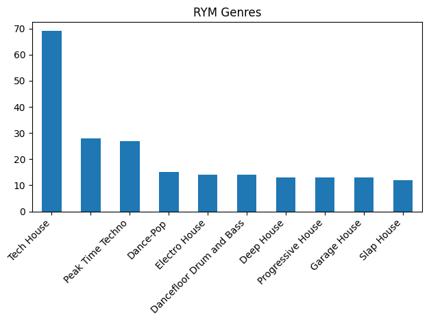
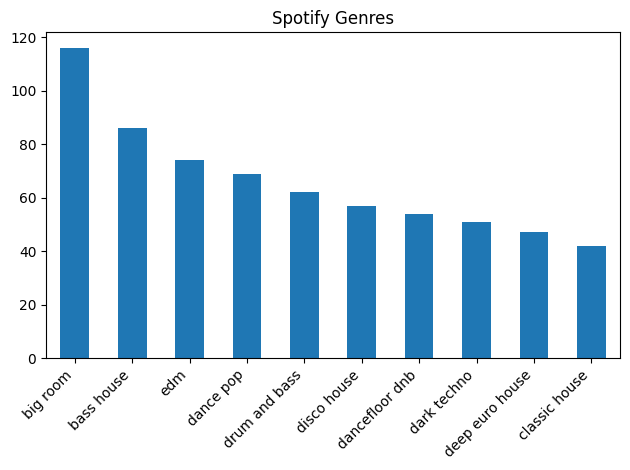
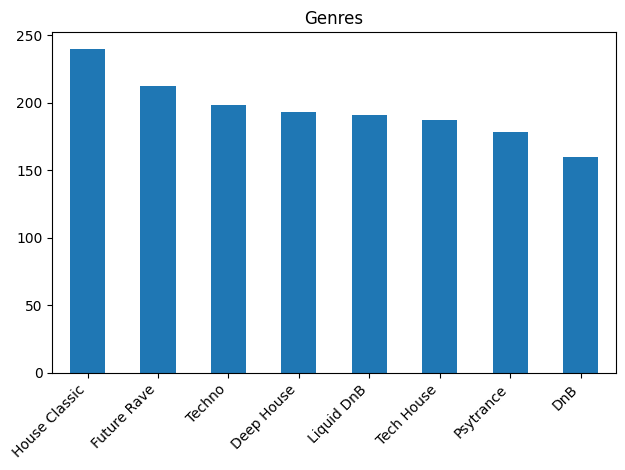
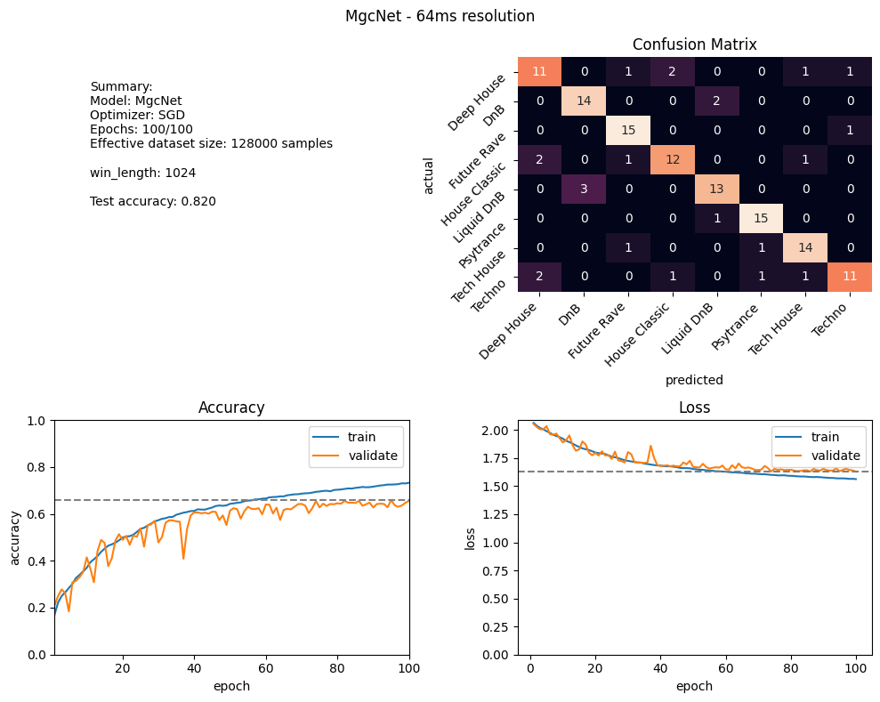

Project Summary
Introduction
Labeling a song with a correct genre is an inherntly difficult problem. Notably because most often there is no correct answer. Genres blend into each other, there is no clear line of separation and often multiple answers seem to fit. Especially if the genres are closely related subgenres.
This led to the idea of using multiple genres for describing a single song to sortof create a spectrum of where the song lie on. Then I would employ deep learning to create a model for classifying songs by a set of gernes.
This proved to be a lot more difficult than expected. Initially I found rateyourmusic.com, a site where users rate music and which often lists multiple genres for a song. Perfect. So I started hacking...
Targets
Elbir, A., & Aydin, N. [1] present a network for music genre classification. They achieved an accuarcy of 81.8% using a CNN and even 97.6% employing an additional SVM on a feature vector from one of the dense layers. I will only do use a CNN for classification. As my choice of genre cover a smaller spectrum of genres that are more simiar to each other. Thus I was aiming for a 60% accuracy.
Data aquisition
I already had a side project for creating a music collection for djaying. It works by reading in a spotify playlist, searching for the songs on youtube, giving me a preview and then downloading and converting them. So I usesd this tool for my dataset creation, downloading was no problem and already proven working (a bit unstable but after this project it improved a lot). I extended it to also get metadata from rateyourmusic.com and store it in a simple .json file. This is where I was met with the biggest hurdle. There was no API, luckily someone wrote a scrapper for it. While getting ratelimited a lot it worked fine for about 300 songs. When I decided to try a different approch to reduce rate limiting I got instantly IP banned.
Analysing what I had so far it was clear that this wasn't a good route anyway.
 
Only a small fraction of songs even had genres. Also spotify did not have a very good selection of genres. So I shifted to the next idea: Get a few genre specific playlists and assign the genres from there. This way I could easiyl create a dataset of 2096 songs.

The quality of my dataset now depends on whoever created these playlists. But skipping through a the songs it seemed accurate (at least as accurate as you even can describe genres).
The pipeline
In mglcass I implemented a robust pipeline for colellecting and processing the raw data, creating datasets and training and evaulating different networks.
Dataset
The dataset contains 2096 songs of 8 genres. For performance reasosns the songs have been converted to 16k wav files. Reading straight from the mp3 files was a huge bottleneck. From the waveforms I create mel spectrograms of the whole songs as a preprocessing step and store all of them in memory.
Then a 128x128 image is cropped from the whole spectrogram. Note that the height contains all the frequency bins so only the time dimension is cropped. Using a width of 128 gives, depending one the spectrogram parameters, a window of about 2 to 8 seconds when choosing reasonable values.
Using this augmentation step we can increase the effective dataset size by a constant factor. For that the whole dataset is iterated over multiple times in a single epoch.
Models
Three different models were employed:
MusicRecNet: The model from [1] using 3 convoultional layers, 2 fully connected layers and dropout layers inbetween.
ResNet18: As a comparison.
MgcNet: My own adaption of MusicRecNet with more convultion layers added. I created this to see what happens with a slightly deeper network.
Training
The training was done in jupyter notebooks for better presentation. Here you can see the baisc program usage in a dry-run example. Some of my experiments include a comparison between adam and sgd optimizers. Where sgd had a slight advantage. There are also training runs with ResNet, ResNet + weight decay and MgcNet. Then I performed some bigger training using more epochs and augmentation and parameters from my previous finding. Mainly weight decay was added. Finally, I ran a 100 epoch training using larger weight decay and lower learning rate on my own network where I achieved a 82% accuracy with very little overfitting.
Results
The results are better than expected. The best test accuracy achieved was 84.4% using my own model. The test accuracy is determined by sampling whole songs and getting an average of the prediction. Thus achieving a better accuracy than in training or validation as here the network only sees a few seconds of the song.
 The results of the best run. In the confusion matrix you can see a good representation of the models performance with only a few outliers. "DnB" and "Liqduid DnB" were deliberately chosen as two very similar genres, mainly differing in energy but having very similar drum patterns and bpm. Between those two classes the model hat the most trouble classifying but still got the majority correct. This run used a weight decay of 0.005 and a learning rate of 0.0001.
Conclusion
As the creation of a big and accurate dataset proves to be a difficult task, maybe looking into unsuperviced approaches for clustering songs by genre might be an interesting approach to look into.
Another approach I might explore in the future would be to try sampling a much greater number of playlist allowing for finding multiple labels for individual songs.
References
[1] Elbir, A., & Aydin, N. (2020). Music genre classification and music recommendation by using deep learning. Electronics Letters, 56(12), 627-629.